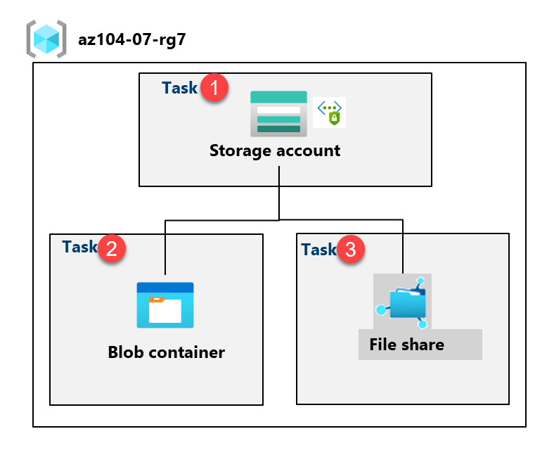
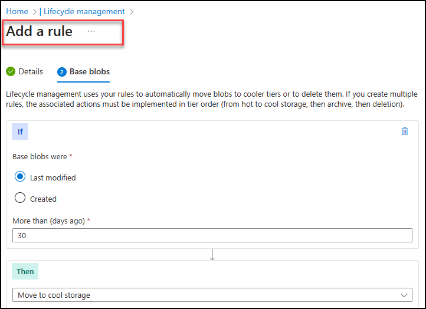
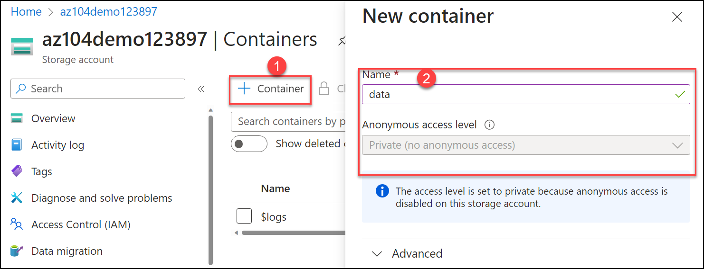
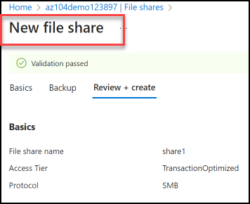
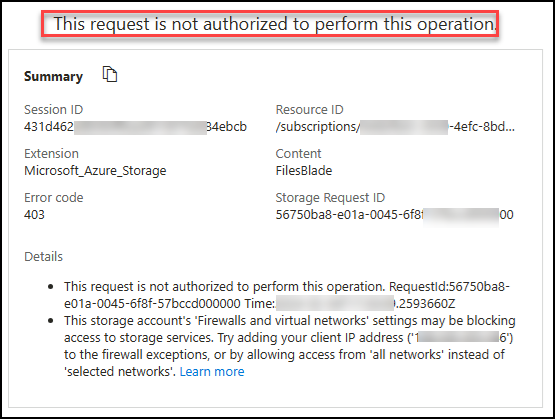

Lab - Manage Azure Storage
Lab Introduction
In this lab you learn to create storage accounts for Azure blobs and Azure files. You learn to configure and secure blob containers. You also learn to use Storage Browser to configure and secure Azure file shares.
This lab requires an Azure subscription. Your subscription type may affect the availability of features in this lab. You may change the region, but the steps are written using East US.
Estimated Timing: 50 Minutes
Lab Scenario
Adamantus Technologies is currently storing data in on-premises data stores. Most of these files are not accessed frequently. You would like to minimize the cost of storage by placing infrequently accessed files in lower-priced storage tiers. You also plan to explore different protection mechanisms that Azure Storage offers, including network access, authentication, authorization, and replication. Finally, you want to determine to what extent Azure Files is suitable for hosting your on-premises file shares.
Interactive Lab Simulations
There are interactive lab simulations that you might find useful for this topic. The simulation lets you to click through a similar scenario at your own pace. There are differences between the interactive simulation and this lab, but many of the core concepts are the same. An Azure subscription is not required.
-
Create Blob Storage. Create a storage account, manage blob storage, and monitor storage activities.
-
Manage Azure Storage. Create a storage account and review the configuration. Manage blob storage containers. Configure storage networking.
Architecture Diagram

Job Skills
- Task 1: Create and configure a storage account.
- Task 2: Create and configure secure blob storage.
- Task 3: Create and configure secure Azure file storage.
Task 1: Create and Configure a Storage Account.
In this task, you will create and configure a storage account. The storage account will use geo-redundant storage and will not have public access.
-
Sign in to the Azure portal -
https://portal.azure.com. -
Search for and select
Storage accounts, and then click + Create. -
On the Basics tab of the Create a storage account blade, specify the following settings (leave others with their default values):
Setting Value Subscription the name of your Azure subscription Resource group az104-rg7 (create new) Storage account name any globally unique name between 3 and 24 in length consisting of letters and digits Region (US) East US Performance Standard (notice the Premium option) Redundancy Geo-redundant storage (notice the other options) Make read access to data in the event of regional availability Check the box Did you know? You should use the Standard performance tier for most applications. Use the Premium performance tier for enterprise or high-performance applications.
-
On the Advanced tab, use the informational icons to learn more about the choices. Take the defaults.
-
On the Networking tab, in the Public network access section, select Disable. This will restrict inbound access while allowing outbound access.
-
Review the Data protection tab. Notice 7 days is the default soft delete retention policy. Note you can enable versioning for blobs. Accept the defaults.
-
Review the Encryption tab. Notice the additional security options. Accept the defaults.
-
Select Review + Create, wait for the validation process to complete, and then click Create.
-
Once the storage account is deployed, select Go to resource.
-
Review the Overview blade and the additional configurations that can be changed. These are global settings for the storage account. Notice the storage account can be used for Blob containers, File shares, Queues, and Tables.
-
In the Security + networking blade, select Networking. Notice Public network access is disabled.
- Select Manage the Public network access.
- Change the Public network access to Enable.
- Change the Default action to Enable from selected networks.
- In the IP addresses section, select Add your client IP address.
- Save your changes.
-
In the Data management blade, select Redundancy. Notice the information about your primary and secondary data center locations.
-
In the Data management blade, select Lifecycle management, and then select Add a rule.
-
Name the rule
Movetocool. Notice your options for limiting the scope of the rule. -
On the Base blobs tab, if based blobs were last modified more than
30 daysago then move to cool storage. Notice your other choices. -
Notice you can configure other conditions. Select Add when you are done exploring.

-
Task 2: Create and Configure Secure Blob Storage
In this task, you will create a blob container and upload an image. Blob containers are directory-like structures that store unstructured data.
Create a blob container and a time-based retention policy
-
Continue in the Azure portal, working with your storage account.
-
In the Data storage blade, select Containers.
-
Click + Container and Create a container with the following settings:
Setting Value Name dataPublic access level Notice the access level is set to private 
-
On your container, scroll to the ellipsis (...) on the far right, select Access Policy.
-
In the Immutable blob storage area, select Add policy.
Setting Value Policy type Time-based retention Set retention period for 180days -
Select Save.
Manage Blob Uploads
-
Return to the containers page, select your data container and then click Upload.
-
On the Upload blob blade, expand the Advanced section.
Note: Locate a file to upload. This can be any type of file, but a small file is best. A sample file can be downloaded from the AllFiles directory.
Setting Value Browse for files add the file you have selected to upload Select Advanced Blob type Block blob Block size 4 MiB Access tier Hot (notice the other options) Upload to folder securitytestEncryption scope Use existing default container scope -
Click Upload.
-
Confirm you have a new folder, and your file was uploaded.
-
Select your upload file and review the options including Download, Delete, Change tier, and Acquire lease.
-
Copy the file URL (Properties blade) and paste into a new In Private browsing window.
-
You should be presented with an XML-formatted message stating Resource Not Found or Public Access Not Permitted.
Note: This is expected, since the container you created has the public access level set to Private (no anonymous access).
Configure limited access to the blob storage
-
Select your uploaded file and then on the Generate SAS tab. You can also use the ellipsis (...) to the far right. Specify the following settings (leave others with their default values):
Setting Value Signing key Key 1 Permissions Read (notice your other choices) Start date yesterday's date Start time current time Expiry date tomorrow's date Expiry time current time Allowed IP addresses leave blank -
Click Generate SAS token and URL.
-
Copy the Blob SAS URL entry to the clipboard.
-
Open another InPrivate browser window and navigate to the Blob SAS URL you copied in the previous step.
Note: You should be able to view the content of the file.
Task 3: Create and Configure an Azure File Storage
In this task, you will create and configure Azure File shares. You will use Storage Browser to manage the file share.
Create the file share and upload a file
-
In the Azure portal, navigate back to your storage account, in the Data storage blade, click File shares.
-
Click + File share and on the Basics tab give the file share a name,
share1. -
Notice the Access tier options. Keep the default Transaction optimized.
-
Move to the Backup tab and ensure Enable backup is not checked. We are disabling backup to simplify the lab configuration.
-
Click Review + create, and then Create. Wait for the file share to deploy.

Explore Storage Browser and Upload a File
-
Return to your storage account and select Storage browser. The Azure Storage Browser is a portal tool that lets you quickly view all the storage services under your account.
-
Select File shares and verify your share1 directory is present.
-
Select your share1 directory and notice you can + Add directory. This lets you create a folder structure.
-
Select Upload. Browse to a file of your choice, and then click Upload.
Note: You can view file shares and manage those shares in the Storage Browser. There are currently no restrictions.
Restrict Network Access to the Storage Account
-
In the portal, search for and select Virtual networks.
-
Select + Create. Select your resource group. and give the virtual network a name,
vnet1. -
Take the defaults for other parameters, select Review + create, and then Create.
-
Wait for the virtual network to deploy, and then select Go to resource.
-
In the Settings section, select the Service endpoints blade.
- Select Add.
- In the Services drop-down select Microsoft.Storage.
- In the Subnets drop-down check the Default subnet.
- Click Add to save your changes.
-
Return to your storage account.
-
In the Security + networking blade, select Networking.
-
Select Add existing virtual network and select vnet1 and default subnet, select Add.
-
In the Firewall section, Delete your machine IP address. Allowed traffic should only come from the virtual network.
-
Be sure to Save your changes.
Note: The storage account should now only be accessed from the virtual network you just created.
-
Select the Storage browser and Refresh the page. Navigate to your file share or blob content.
Note: You should receive a message not authorized to perform this operation. You are not connecting from the virtual network. It may take a couple of minutes for this to take effect.

Cleanup your Resources
If you are working with your own subscription take a minute to delete the lab resources. This will ensure resources are freed up and cost is minimized. The easiest way to delete the lab resources is to delete the lab resource group.
- In the Azure portal, select the resource group, select Delete the resource group, Enter resource group name, and then click Delete.
- Using Azure PowerShell,
Remove-AzResourceGroup -Name resourceGroupName. - Using the CLI,
az group delete --name resourceGroupName.
Key Takeaways
Congratulations on completing the lab. Here are the main takeaways for this lab.
- An Azure storage account contains all your Azure Storage data objects: blobs, files, queues, and tables. The storage account provides a unique namespace for your Azure Storage data that is accessible from anywhere in the world over HTTP or HTTPS.
- Azure storage provides several redundancy models including Locally redundant storage (LRS), Zone-redundant storage (ZRS), and Geo-redundant storage (GRS).
- Azure blob storage allows you to store large amounts of unstructured data on Microsoft's data storage platform. Blob stands for Binary Large Object, which includes objects such as images and multimedia files.
- Azure file Storage provides shared storage for structured data. The data can be organized in folders.
- Immutable storage provides the capability to store data in a write once, read many (WORM) state. Immutable storage policies can be time-based or legal-hold.
Address: H-34, Ground Floor, Sector 63, Noida, Uttar Pradesh
Email: info@ceekh.com